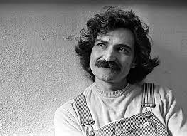

Agenor de Miranda Araújo Neto, mais conhecido como Cazuza (Rio de Janeiro, 4 de abril de 1958 — Rio de Janeiro, 7 de julho de 1990), foi um cantor, compositor, poeta e letrista brasileiro. Primeiramente conhecido como vocalista e principal letrista da banda Barão Vermelho,[1] na qual fez bem sucedida parceria com Roberto Frejat, Cazuza posteriormente seguiu carreira solo, sendo aclamado pela crítica como um dos principais poetas da música brasileira.[2] Cazuza também ficou conhecido por ser rebelde, boêmio e polêmico, tendo assumido em entrevistas sua bissexualidade. Em 1989, revelou ser soropositivo (termo usado para descrever a presença do vírus HIV, causador da Síndrome da Imunodeficiência Adquirida, e morreu no ano de 1990, aos 32 anos no Rio de Janeiro.
Filho de Lucinha Araújo (1936) e do produtor musical João Araújo (1935-2013), Cazuza recebeu o apelido mesmo antes do nascimento. Agenor, seu verdadeiro nome, foi recebido por insistência da avó paterna.[1] Na infância, Cazuza nem sequer sabia seu nome de batismo, por isso não respondia à chamada na escola. Só mais tarde, quando descobriu que um de seus compositores prediletos, Cartola, também se chamava Agenor (na verdade, Angenor, por um erro do cartório), foi que Cazuza começou a aceitar o nome

Cássia Rejane Eller,[1][2] (Rio de Janeiro, 10 de dezembro de 1962 — Rio de Janeiro, 29 de dezembro de 2001[3]) mais conhecida como Cássia Eller, foi uma cantora, compositora e multi-instrumentista brasileira. Foi uma das maiores representantes do rock brasileiro dos anos 90 e eleita a 18ª maior voz e a 40º maior artista da música brasileira pela revista Rolling Stone Brasil.[4] Lançou cinco álbuns de estúdio em vida: Cássia Eller (1990), O Marginal (1992), Cássia Eller (1994), Veneno AntiMonotonia (1997) e Com Você... Meu Mundo Ficaria Completo (1999). Seu sexto álbum de estúdio, Dez de Dezembro (2002) foi lançado postumamente. O álbum mais bem-sucedido de Cássia foi o Acústico MTV (2001), com mais de um milhão de cópias vendidas e um prêmio Grammy Latino de Melhor Álbum de Rock.
Cássia morreu aos 39 anos em 29 de dezembro de 2001, após um infarto do miocárdio causado por uma malformação de seu coração.

Antônio Carlos Belchior,[2] mais conhecido como Belchior (Sobral, 26 de outubro de 1946 — Santa Cruz do Sul, 30 de abril de 2017[3]), foi um cantor, compositor, músico, produtor, artista plástico e professor brasileiro. Um dos membros do chamado Pessoal do Ceará, que inclui Fagner, Ednardo, Amelinha e outros, Belchior foi um dos primeiros cantores de MPB do nordeste brasileiro a fazer sucesso internacional, em meados da década de 1970.
Em certa época, Belchior fez uma brincadeira adicionando os sobrenomes dos pais ao seu, dizendo que seu nome completo seria: "Antonio Carlos Gomes Belchior Fontenelle Fernandes", para dizer que seria o "maior nome da MPB".[2]
Seu álbum Alucinação, de 1976, produzido por Marco Mazzola, é considerado por vários críticos musicais como um dos mais revolucionários da história da MPB, e um dos mais importantes de todos os tempos para a música brasileira.[4][5][6][7] Em 2012, Belchior apareceu na posição 58 da lista As 100 Maiores Vozes da Música Brasileira pela Rolling Stone Brasil.
ganhou o primeiro lugar no IV Festival Universitário de 1971 com a música "Hora do Almoço", interpretada por Jorginho Telles e Jorge Neri. Entre os seus maiores sucessos estão "Apenas um Rapaz Latino-Americano", "Como Nossos Pais", "Mucuripe" e "Divina Comédia Humana".[8] Outras composições de Belchior de grande sucesso foram "A Palo Seco", "Fotografia 3 x 4", "Comentário a Respeito de John", "Tudo Outra Vez", "Conheço o Meu Lugar", "Medo de Avião", "Coração Selvagem", "Como Nossos Pais" (sucesso na voz de Elis Regina), "Todo Sujo de Batom" (regravada por Antônio Marcos), "Paralelas" (gravada por Vanusa) e "Galos, Noites e Quintais" (regravada por Jair Rodrigues).[9]